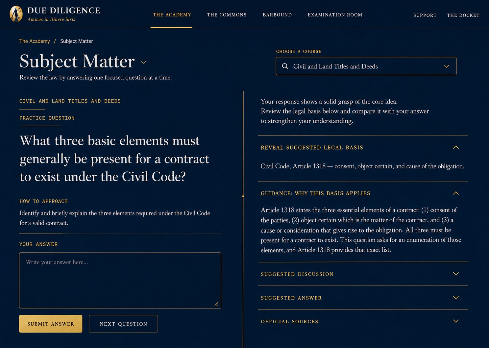

Subject Matter Option 3 fidelity comparison
Same active Subject Matter composition. The production header may differ; answer-left and review-right geometry is the acceptance focus.

Same active Subject Matter composition. The production header may differ; answer-left and review-right geometry is the acceptance focus.
